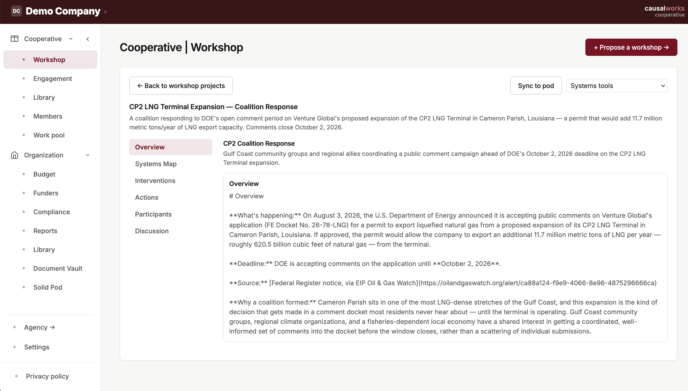
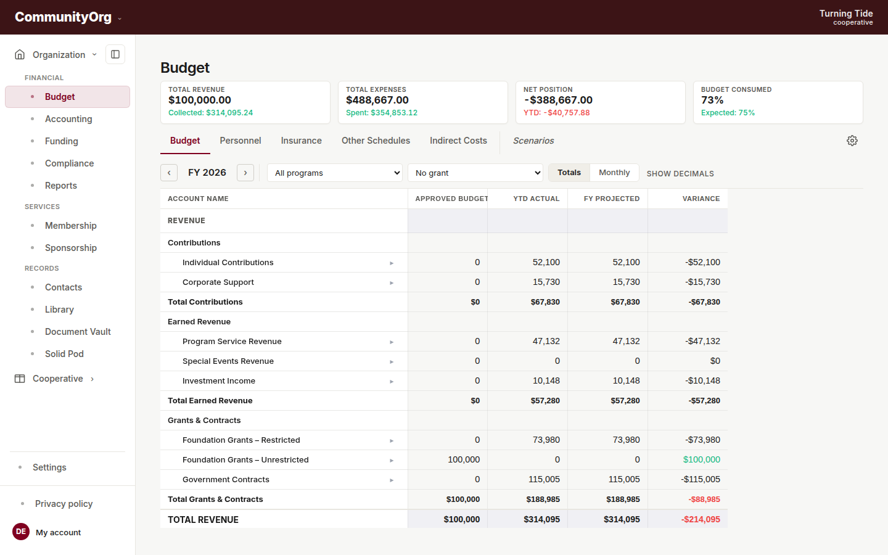
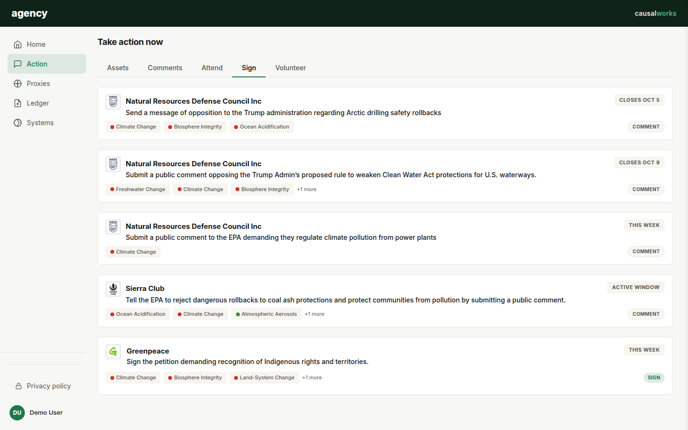
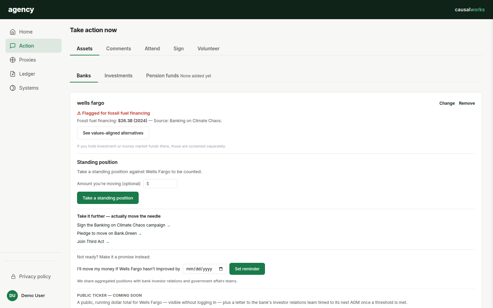

Causal
Project Brief
Causal.works is an initiative to develop platform cooperatives for nonprofits and coalitions working on the human-systems change needed to live within Earth's planetary boundaries — climate action, civic action, education, social work, cultural work, and other fields. These groups share a common set of operational needs. The cooperatives form around shared purpose, owning and governing their own private data infrastructure.
The project addresses two problems that compound each other. Many advocacy groups report limited leverage when acting in parallel: each runs campaigns, mobilizes members, and targets decision-makers independently, without coordinated timing or concentrated pressure. Meanwhile the data systems these groups rely on are rented from vendors with no stake in their mission, and their records sit in the vendor's database, outside their control. Cooperatives that own the tools managing their members' data begin to leverage new power.
The shift from rented software to shared ownership rests on three changes:
- Common needs framework — The management tools (budgeting, grants, accounting, compliance) are built around the operational needs nonprofits share, so groups work from common structures instead of each improvising their own. Every organization's instance is completely private to it.
- Cooperative structure — Collaboration happens in Workshop and the shared cooperative resources: the peer network, the work library, and the work pool. The organizations that use the tools shape those resources and, over time, help govern the platform. They are not a customer base a vendor draws revenue from.
- Data sovereignty — Each organization holds full control of its own records. An organization's documents are held in its own Solid pod rather than only in a vendor's database, and access to them is something the organization grants, limits, and can withdraw.
This change is newly realistic because AI-assisted development lets a very small team build and maintain infrastructure.
Current Status
The current build was created by an experienced nonprofit professional working with coding agents. A functioning version exists that now needs experienced human collaborators in platform architecture, app functionality, UI and UX design, systems frameworks, and rollout path.
The current live build has two parts. The Cooperative workspace is the sector-neutral operational core. It provides collaboration resources (peer network, library, work pool, and a workshop for systems analysis) alongside an enterprise management tool set: budgeting, accounting, fundraising, membership, sponsorship, compliance, and governance. Agency is a personal civic app that informs individual decision-making with leverage-point logic grounded in planetary boundaries science and the Earth4All turnarounds. It centralizes the actions people can take: where they bank and invest, petitions, comments on pending legislation, protests, volunteering, and advocacy to elected officials and proxies.
Where things stand:
- Data sovereignty — Documents can be held in an organization's own Solid pod. The platform still holds the credential that controls each pod, and removing that is the main technical goal (see Technical Stack & Sovereignty).
- Workshop — Still developing, and not yet reviewed by a systems-change practitioner.
- Agency — Its features are a mix of live, scaffolded, and aspirational. Action tagging is rudimentary today.
- Instance governance — The curated multi-instance feed is documented but not built, and how advisors to new instances are admitted and held accountable is not yet decided.
- Role of Causal.works — Causal.works can be retired once the platform template propagates to self-managed cooperatives, though it's possible that it perpetuates as some form of shared infrastructure for a federation of cooperatives.
The Operational Model
Every instance running on Causal draws from one architecture, split into core infrastructure that any group can adapt and field-specific applications built on top of it.
Cooperative (Platform Core)
Nothing in Cooperative's core modules requires advocacy, climate, or political content. Any collective, fiscal sponsor, or community organization can use it to run its day-to-day operations:
-
Workshop — A collaborative workspace for mapping systemic problems, organizing projects, sharing documents, and modeling interventions.

- Peer Network & Work Pool — A directory of participating organizations, a shared knowledge library, and work-request exchange across organizations.
-
Budget, Funders & Accounting — Multi-program budgeting, grant allocations, donor tracking, and projections, alongside an internal accounting ledger with bills, invoices, bank reconciliation, expense claims, and fixed assets, plus membership tracking and fiscal sponsorship support. Syncs with Xero for actuals comparison and cashflow forecasting. Each organization's data is private to it.

- Compliance & Reporting — IRS Form 990 functional expense tracking, governance obligations, an audit-readiness check of documents against what an audit will ask for, and board and funder reports.
- Roles & access — Admin, finance, program, and fundraising roles, with program-level scoping enforced in the database, so people see only the budgets and personnel data their role covers.
Agency (First Instance)
Agency is the platform's first fully worked-out application, and a proof of concept for how Causal's general infrastructure extends into public-facing civic engagement. Its features:
-
Action — A unified decision feed of actions you can take: petitions, public-comment filings, events, volunteer positions, donations, and bank-divestment steps. Sorted by urgency, location relevance, and system leverage points. You see the organizations you follow, and each action shows which systemic lever it pulls.


- Proxies — Who is representing your interests and what they are doing: federal, state, and local elected officials, financial institutions, and advocacy organizations, based on your settings.
- Ledger — A personal record of completed actions, direct giving, and moved capital such as bank transfers or divestment pledges.
- Systems — The platform's empirical framework and action-filtering logic: planetary boundaries science, turnaround recommendations, and an overview of leverage points.
How Groups Launch Their Own
The intended rollout is decentralized. A short-term startup team builds and hands over the tooling, rather than becoming a permanent administrative entity. Multiple cooperatives can then adopt it and fork the shared codebase for their own use cases. This also supports more complex structures, such as a worker cooperative serving the needs of a nonprofit cooperative.
A fork is not just a copy of the code. It needs its own mapping onto Earth4All's turnarounds, decided by the people forming around it, with the same rigor Agency applies to planetary boundaries science. Systems thinking alone is a method, not a position: it can organize a supply chain as easily as a movement. What makes an instance trustworthy is that its actions are checked against measures of human wellbeing.
Deciding whether a proposed instance serves the turnarounds, rather than borrowing their language without their substance, is a governance question. A platform agent is meant to recommend whether a proposed instance fits, checked by a human advisory group that grows out of the adopters themselves. The first adopters would be advised by that agent and then take on advising later ones.
The design is that Agency follows organizations from many Cooperative instances and pulls from them, rather than every organization pushing into one shared feed. Which instances and organizations Agency includes would be a curated, human-approved list.
Platform Logic & Intellectual Rigor
In the Agency instance, Earth4All's five turnarounds (poverty, inequality, empowerment, food, and energy) are the benchmark for whether an intervention advances human wellbeing. Beneath them sits the planetary boundaries framework, which provides the ecological baselines.
Research suggests that common actions like petition signing have lower impact than, for example, changing where people bank and invest. Lower-impact actions stay in the platform, on the idea that coordinating them raises engagement and effectiveness. Action tagging is meant to be refined with direct input from the groups that produce these frameworks.
The framework has clear limits:
- Framework boundaries — Earth4All does not claim completeness by its own account. The Earth Commission, the research body behind planetary boundaries, now frames the boundaries as "safe and just," building distributive and procedural justice into where the lines sit. Dimensions such as racial, colonial, or historical equity sit near the open edge of current models, not fully inside the five turnarounds as originally published.
- Sector frameworks — Other instances rely on equivalent peer-reviewed or field-tested standards for their own field, and can draw on the same underlying logic without surfacing the ecological detail Agency does.
Core Approach
- Sovereignty first — Data ownership belongs to the person or the collective. Documents and choices live in user-controlled stores, not locked inside a central system.
- Sector frameworks grounded in evidence — Every instance uses frameworks grounded in expert research to identify high-leverage interventions for its area.
- Systems & leverage dynamics — Tools use system-dynamics methods to map root causes, locate intervention points, and redirect institutional capital toward mission-aligned outcomes.
- Ownership by adopters — Each group that launches a platform cooperative owns and governs its own platform. The platform template supplies the tooling and a starting codebase.
Technical Stack & Sovereignty
The codebase runs on a Hetzner VPS with Node.js/Express and PostgreSQL, supporting invited demo users and live data. It has these main layers:
- Relational core — Multi-tenant PostgreSQL with row-level security hosts organizational budgets, compliance obligations, audit logs, and the internal accounting ledger.
- Solid pod sovereignty (underway) — Each organization can hold its documents in its own self-hosted Solid pod (Community Solid Server), outside Causal's database. Built today: per-document sync with confirmation, scoped and expiring access permissions, standing access groups, a revocable sync service the organization grants and can withdraw, and link sharing for people without a Solid identity that checks the recipient's email with a one-time code before opening the document. A Solid-OIDC login lets a person use their own identity, as a prototype not yet tied to organization roles.
- Identity boundary — Making the organization's own admin, via their own Solid-OIDC identity, the pod's actual controlling account (replacing the service credential the platform currently holds) is a near-term goal, not deferred. Broader identity work — deriving per-member pod permissions from internal roles, and personal pods for individual Agency users — remains longer-range. Pod storage covers organization documents only; budget, compliance, and the rest of Cooperative stay in PostgreSQL, with periodic pod copies planned for live data.
- Integrations — Xero (chart of accounts and profit-and-loss data, with account-name updates written back and nothing more), Plaid bank feeds, Postmark email, and Mistral being tested to replace Gemini for turning organization emails into feed cards and reading receipts and contracts. Agency draws on the FEC, Federal Register, and Google Civic Information APIs, ProPublica Nonprofit Explorer for verifying organizations, EIP Oil & Gas Watch for permitting alerts, and Mobilize for local events.
Federal data sources are not guaranteed stable. Nearly 400 US government datasets have been deleted or altered since January 2025, and the platform's dependence on FEC, Federal Register, and Civic Information API data reflects that risk. A citizen-led data rescue movement is archiving public data outside government control, the same instinct behind Causal's approach to data sovereignty.
GitHub repository
Platform Rollout & Candidate Cohorts
Because the core operational modules are sector-neutral, the infrastructure supports different organizational models across fields:
1. Grassroots Climate & Advocacy (Agency Cohort)
The initial deployment scales through grassroots climate groups and advocacy networks, connecting civic action feeds to institutional decision-makers.
2. Community Development & Fiscal Sponsorship Networks
A second candidate cohort exists within fiscally-sponsored networks and their partner organizations:
- Arts & place-based development — Combining arts, environmental stewardship, and economic development in underserved neighborhoods, requiring flexible program-level budgeting and cross-initiative compliance.
- Civic & mutual-aid networks — A civic-engagement and mutual-aid network operating on a "spoke and wheel" model to connect residents with local civic engagement, a structure that mirrors the Action and Proxies architecture.
3. Federated Membership & Legal Advocacy
Institutional leadership experience at federated legal advocacy organizations points to clear infrastructure uses for federated legal networks:
- Cooperative fit — High alignment for multi-entity financial tracking, member-dues management, and shared operational compliance across regional chapters.
- Agency caution — Direct civic action tools in sensitive contexts need careful design boundaries. Where the interaction involves government policy rather than elected officials, persistent digital records of immigration-related advocacy carry safety and privacy risks that need tailored security models rather than standard public feeds.
Unbuilt & Active Development Pipeline
Overall, the roadmap is to complete the tool set, integrate expert feedback and user testing, attain certifications, and roll out to a first cohort of real organizations. These are the active engineering priorities and capabilities not yet built:
- Pod sync beyond documents — Generated reports are the next candidate; live data such as budgets would sync as periodic pod copies rather than being removed from Causal's database. Co-owned Workshop content would sync a copy to each participating organization's pod.
- Per-user Solid identity tied to roles — Deriving an individual's pod permissions from their organization role and program scope, and verifying link recipients by Solid identity rather than email.
- Agency personal pods — Extending Solid sovereignty to Agency users' own civic-action records (actions, pledges), held in each person's own pod.
- Curated multi-instance feeds and instance governance — Agency pulling from organizations on more than one Cooperative instance, and the advisory group that vets new instances.
- GL & accounting push — Direct push of draft budget journal entries to general ledger systems (Xero).
- Audit-ready schedule reconciliation — Automated monthly reconciliation between schedule projections and GL actuals.
- Agency financial and pledge tools — Automated card and payee tracking for personal financial positions; aggregated bank and fund divestment pledges; bundled giving apportioned across followed organizations; user-added local and union officials.
- Worker cooperative and credit distribution — Internal work-management and credit-tracking systems for worker cooperatives.
- Legislative and lobbying intelligence — Professional-tier data services (Bloomberg Government, FiscalNote, Quorum), which need legal review of their display licensing before any integration.
- Payment execution — Sending payments (ACH, check, card) from within the platform. Parked because of money-transmitter liability; recording payments made elsewhere already works.
- Multi-currency — Support for organizations that hold and report in more than one currency, needed for a European build.
- Online donations through Stripe Connect — Online giving, a donate page, and matching Stripe payouts to bank deposits.
- Federal award reporting — A Schedule of Expenditures of Federal Awards report, and subaward tracking so the indirect-cost base can exclude subaward amounts correctly.
- Activity-level budgeting — Entering and rolling up budget amounts at the activity level beneath a program.
- Platform instance record and founding organization — A record naming each instance for the cooperative that launches it, and the founding organization responsible for its administration.
- Contracts module — Contract tracking alongside Grants.
- Auditor access and finer roles — A read-only auditor role and more granular permissions on financial work.
- Guided budget onboarding and migration — A step-by-step setup wizard for importing an organization's existing budget data.
Guy Yarden
Berlin, DE
Experienced administrator focused on improving the operations of nonprofits to realize their programmatic goals. Collaborative approach that embraces diverse and shared experiences. Specific interest in cooperative solutions to address shared challenges. Broad range of experience including financial forecasting and modeling, budget management, bookkeeping, grant writing, fundraising, audit & tax support, board & staff management and reporting, program management, and organizational startup and evolution.
Professional Experience
Interim Executive Director, National Immigration Project of the National Lawyers Guild 2019–2020
- Supported board and staff transitions, executive search, and fundraising during a complex juncture in organizational history. Coordinated a reduced staff, updated, upgraded and maintained financial and planning systems, and supported an 18-month audit. Migrated membership discussion forums to a new platform, worked with board members on fundraising and hiring, planned for the annual member conference. Supported new director, new staff hiring, and office relocation.
CoFounder & Manager, ArtsPool 2010–2017
- Conceived a shared infrastructure company for nonprofit organizations and formed the core team to develop ArtsPool with major support from the Rockefeller Foundation Cultural Innovation Fund, The Scherman Foundation, Rosin Fund, and New York Community Trust. In December 2014, ArtsPool spun off from A.R.T./New York and launched as an independent LLC. Currently, ArtsPool is a growing cooperative of more than 40 member companies. ArtsPool provides members with a range of financial, personnel, and compliance management services and is overseen by a committee structure comprised of member and staff representatives.
Director of Finance, Alliance of Resident Theatres/New York 2009–2014
- Led financial management and planning for a $4 million annual budget membership organization that provides a wide range of services to more than 350 theater organizations.
- Staff lead for design of new $15 million theater facility in collaboration with NYC government agencies. Developed reserve fund model to support sustainable operations of three facilities and subsidization of member theater rentals. Collaborated with consultants and staff to structure the fundraising campaign. Maintained investment policies and worked with fund managers.
- Financial supervision of a $2 million member loan program and a $1.5 million shared facilities program that offers 45,000 square feet of office and studio space to member companies. Led staff in adoption of new facility management systems.
- Ongoing review, analysis, and implementation of IT systems, including web-based software solutions for facilities, membership, scheduling, lending, grantmaking, fundraising and accounting.
- Managed cash flow, prepared grant budgets and reports, supplemental grant writing, managed organizational budgeting process, managed payroll and human resources for staff of twenty, maintained regulatory compliance, supported annual audit and tax return process, and prepared financial reports for board of directors, finance, audit, and loan committees.
Interim Executive Director, Danspace Project 2007
- Interim management of acclaimed contemporary dance presenting organization after departure of long-time Executive Director. Provided staff and board support; financial supervision, including management of annual budget and audit; lease negotiations; planning for presenting season; oversight of fundraising activities. Provided organizational leadership in ongoing strategic planning activities and negotiations with City of New York and local funders for development of choreographic center in Brooklyn.
PARC Project Director, Danspace Project 2005–2007
- Conceived PARC, a timeshare choreographic workspace center. Worked with Danspace Project to merge the PARC concept with organizational goals to develop new performance space. Project was selected by the City of New York for development in the Downtown Brooklyn Cultural District. Approximately $25 million was designated for the project. Provided ongoing planning, fundraising, and project leadership, and coordinated with numerous project consultants and NYC government agencies. (project terminated)
Director of Finance & Operations, Dance Theater Workshop 1998–2000, 2004–2006
- Supervised annual budget and financial planning during major transitional period of $2.3 million renowned performing arts organization. Worked on strategic planning for $10 million capital campaign, creation of endowment, and construction of new performing arts facility. Participated in negotiation of public/private partnership including sale of air rights. Recommended organizational restructuring to prepare for increased costs of new facility. Supervised implementation of new accounting system.
- Participated in post-construction financial stabilization effort and management of $3.5 million annual expense budget. Developed new operating models and made recommendations on organizational structure, staffing, expense control, cost-cutting and debt management.
- Maintained cash flow, managed investment activities, prepared grant budgets and reports. Supervised departmental budgets, internal reporting procedures, payroll, and human resources for staff of thirty. Supervised staff and board compliance in annual audit. Prepared monthly, quarterly and annual financial reports for board.
Co Director, Movement Research 1991–1995
- Co-managed internationally acclaimed center for experimentation in dance and performance. Produced all programs including 30-week performance series; semiannual publication; award-winning symposia series; national and international artist exchange program; artist commissioning and residency program; year-round workshop and technique classes; dance education in local public schools. Managed aspects of all programs, financial management, board development, fundraising, marketing, press relations, and organizational planning.
Performance Space 122 1986–1991
- Curator of concert series, marketing manager, bookkeeper, and budget manager during early growth years of internationally renowned performance art center.
Other Professional Experience
Consulting services
Asheville Creative Arts, New Federal Theatre, VisArt Video, AlterTheater, New York State Theater at Lincoln Center, Meet the Composer, American Museum of Natural History, Original Artists, Inc., Big Tree Productions, NY America, Human Future Dance Corps, LAVA, Urban Bush Women, David Dorfman Dance, Martha Graham School of Dance, Trisha Brown Company, Asian American Arts Alliance, Joffrey Ballet, Merce Cunningham Dance Foundation, Engine 27, Conway & Pratt, John Jasperse Company, Doug Varone & Dancers, CRI Recordings, American Composer's Alliance, Creative Capital MAP Fund, Rencontres Internationales des Oevres Chorégraphiques, Bessie Awards, Lower Manhattan Cultural Council, New Music America/NYC, Eyemag Media, American Composers Alliance and CRI Recordings.
Board Member
Movement Research, Inc. (1989–1991, 1995–1998, 2003–2014, 2015–2017)
Chashama, Inc. (1996–2000)
Other Experience
- Accounting and database applications including automations and integrations, new systems transition and implementation, general application and website development.
- Multimedia design and staging; theatrical sound and lighting; multi-channel audio systems and recording; editing and graphic design; producing and catering large events.
- Computing since the DOS era, with self-taught coding skills picked up along the way — particularly after the advent of HTML. Built small websites, contributed to app development projects.
Composer, Performer 1985–2005
CV available upon request.
Earlier
- Bard College, B.A., Music, 1983